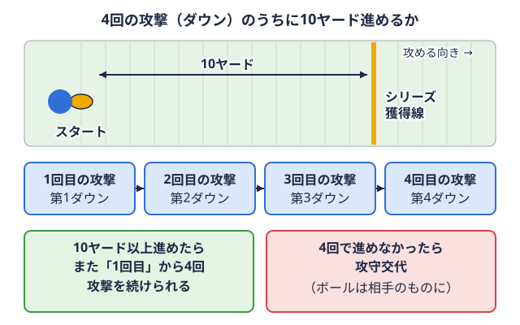
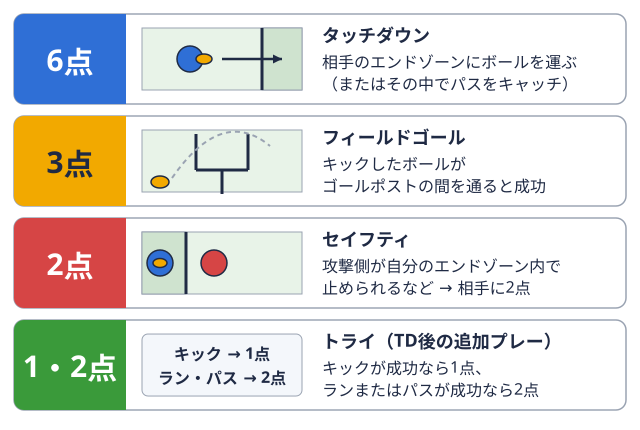
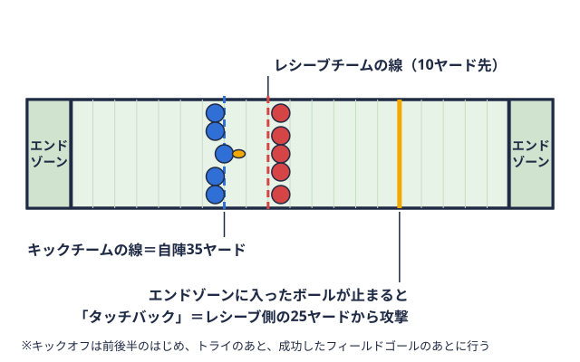

観戦ガイド 2026-11-04
アメフト用語集50選｜観戦・実況でよく聞く言葉を初心者向けに解説
大学アメフトを観戦していると、実況や場内アナウンスで「プレークロックが残り少ない」「レッドゾーンに入りました」「ここでブリッツラインの後ろに立つ守備選手も一緒に突っ込み、パスを投げる選手に迫る守り方。用語辞典で見るです」といった言葉が次々に出てきます。ルールの文章を読んでも、試合のどの場面でその言葉が使われるのかは、なかなかつかみにくいものです。
この記事では、大学アメフトの観戦や中継で耳にしやすい言葉50語を、編集部が8つのカテゴリに分けて選びました。各語に「よく聞く場面」を添えているので、試合を見ながら引く辞典として使えます。ルールブックの定義そのものを知りたい場合は、アメフト初心者が最初に覚える用語集に公式規則書の定義をもとにした約30語をまとめてあります。この記事ではそちらと重なる語を短く触れるにとどめ、実況・戦術・大学リーグの言葉を中心に扱います。
この用語集の選び方と使い方
選定は編集部が行い、基準は次の3つです。
- 関東学生アメリカンフットボール連盟（KCFA）のTOP8・BIG8の試合を観戦・中継で見るときに、耳にしやすい語であること
- 既存の規則書定義記事と重ならない語を優先すること
- 定義を公式資料や公開情報で確認できる語であること
また、NFL中継で使われる呼び方と、日本の大学の試合で扱いが異なる語には注記を付けました。大学リーグ戦は1クオーター12分ですが、NFLは15分であるなど、競技の基本部分にも違いがあるためです。
50語のカテゴリと語数は次のとおりです。
- 試合の進行と時計の用語（6語）
- ダウン攻撃1回分のこと。ボールが動き出してから止まるまでが1回で、攻撃側は4回まで続けて行える。

用語辞典で見ると陣地の用語（6語） - 得点の用語（5語）
- 攻撃のプレーの用語（10語）
- 守備のプレーの用語（8語）
- キックの用語（4語）
- 反則罰則が決まっているルール違反。審判が旗を投げて知らせ、陣地を下げられるなどの罰がある。用語辞典で見ると審判の用語（6語）
- 大学リーグ（関東）の用語（5語）
なお、「規則上の用語ではなく、一般に〜と呼ばれる」語は、本文でそのように明記しています。
試合の進行と時計の用語（6語）
大学のリーグ戦は1クオーター12分、4クオーターで合計48分です（日本アメリカンフットボール協会の初心者向けページによる）。試合では、全体の時間を計る時計と、次のプレーまでの時間を計る時計の2つが動いています。
| 用語 | 意味 | よく聞く場面 |
|---|---|---|
| クォーター | 試合を4つに区切った単位。大学のリーグ戦は1クォーター12分で、NFLは15分です。 | 「第3クォーター開始です」と実況が告げるとき |
| ハーフタイム | 第2クォーターと第3クォーターの間にある休憩です。 | 前半終了後、両チームがロッカーに戻るとき |
| ゲームクロック | 試合時間を計る時計です。パスの失敗、サイドラインフィールドの長い辺にある境界線。ボールを持った選手がここに触れるか出ると、その場でプレーが止まる。 用語辞典で見るの外に出たプレー、得点、タイムアウトなどで止まります。 用語辞典で見るの外に出たプレー、得点、タイムアウトなどで止まります。 | 時計が止まるか動き続けるかで、残り時間の使い方が変わる終盤 |
| プレークロック | 次のスナッププレー開始の動作。地面に置いたボールを、攻撃側の選手が後ろへ渡す。 用語辞典で見るまでに許される時間を計る時計です。状況により40秒または25秒で、時間内にスナップできないとディレイオブゲームの反則になります。 用語辞典で見るまでに許される時間を計る時計です。状況により40秒または25秒で、時間内にスナップできないとディレイオブゲームの反則になります。 | スナップ直前に場内の時計が減っていく場面 |
| タイムアウト | チームが請求して時計を止める中断です。リプレイ検証のチャレンジは、タイムアウトが残っている場合に限って要求できます。 | 攻守のタイミングを整えたいとき、チャレンジの前 |
| 残り2分のタイムアウト | 第2・第4クォーターの残り2分で、審判が宣告するタイムアウトです。 | 前半と後半の最終盤で、審判が合図するとき |
ゲームクロックとプレークロックの関係を意識すると、リードしているチームが時間を使い切ろうとする場面や、追う側が急ぐ場面の意味がわかりやすくなります。試合時間や所要時間の全体像は大学アメフトの試合時間とルール入門に、2026年度の規則変更は2026年度ルール改正の解説にまとめています。
ダウンと陣地の用語（6語）
攻撃側は4回の攻撃（ダウン）で10ヤード距離の単位で、1ヤードは約0.9メートル。フィールドには5ヤードごとに線が引かれている。用語辞典で見る進むと新しい攻撃権を得る、というのが基本です。ここでは、その基本の上に乗っている「状況を表す言葉」を取り上げます。
| 用語 | 意味 | よく聞く場面 |
|---|---|---|
| ファーストダウン新しい4回の攻撃の1回目。10ヤード以上進むと、また最初から4回の攻撃が与えられる。用語辞典で見る更新 | 4回のダウン以内に10ヤード進み、新しい攻撃権（シリーズ攻撃側に与えられる、最大4回までの攻撃のひとまとまり。10ヤード進むと新しく始まる。用語辞典で見る）を得ることです。定義は初心者向け用語集記事を参照してください。 | 「ファーストダウン更新です」と審判が前に腕を振るとき |
| サードダウン（コンバージョン） | 3回目の攻撃です。サードダウンでの更新割合は、攻撃の安定度を見る目安として使われます。 | 「サードダウンコンバージョン」「3rd Down Efficiency」と解説されるとき |
| ギャンブル | 第4ダウンで蹴らずに攻撃を続けることです。日本の実況でよく使われる呼び方です。 | 第4ダウンで攻撃側が整列を続けたとき |
| ドライブ | 攻撃権を得てから失うまでの、一連の攻撃です。 | 「このドライブで得点できるか」といった実況 |
| レッドゾーン | 相手のエンドゾーン両ゴールラインの外側にある、奥行き10ヤードの得点エリア。ここにボールを持ち込むと得点になる。用語辞典で見るまで20ヤード以内の区域を指します。規則上の用語ではなく、NFL中継などで使われる呼び方です。 | 得点が近い場面で「レッドゾーンに入りました」と告げられるとき |
| チェーン（ダウン表示） | サイドラインで、起点と10ヤード先を示す2本の棒、およびダウン数の表示です。 | 更新が微妙なとき、チェーンが運ばれる場面 |
「ギャンブル」は、第4ダウンで更新できなければ相手に攻撃権が移るため、成功と失敗で試合の流れが大きく動く場面です。ダウンやシリーズ、スクリメージラインプレー開始時にボールの先端を通る、サイドラインに直角の線。攻守が向かい合う境目になる。用語辞典で見るといった規則書の定義は、初心者向け用語集で確認できます。
得点の用語（5語）
得点の方法は5種類です。タッチダウンボールを持って相手のエンドゾーンに入る、またはその中でパスをキャッチして得る6点の得点。 
| 用語 | 意味 | よく聞く場面 |
|---|---|---|
| タッチダウン | 6点が入る得点です。 | 「タッチダウン」と審判が両腕を上げるとき |
| トライ（PAT） | タッチダウン後の追加プレーで、キックが成功すると1点です。規則上の名称は「トライ」で、日本アメリカンフットボール協会の初心者向けページでは「ボーナスプレー（PAT）」とも記載されています。 | タッチダウンの直後、キックチームが入るとき |
| 2ポイントコンバージョン | トライでラン・パスによってタッチダウンを決めると2点になります。 | 点差が特定の数字のとき、キックでなく攻撃を選んだ場面 |
| フィールドゴールゴールポストの間にボールを蹴り込んで得る、3点の得点。キックが成功したときだけ入る。用語辞典で見る | キックで決める3点です。 | 第4ダウンで、ゴールポストを狙う隊形になったとき |
| セーフティ守備の最後方に立つ選手。また、攻撃側が自陣エンドゾーンで止められて相手に入る2点の得点もこう呼ぶ。用語辞典で見る | 守備側に2点が入る得点です。タッチバック攻撃側の責任でボールが相手のエンドゾーンを越えて止まること。守備側の20ヤード（キック後は25ヤード）から再開。  用語辞典で見るとの違いは初心者向け用語集記事を参照してください。 | 攻撃側が自陣エンドゾーンでタックルボールを持つ相手を、体を使って止めること。攻撃のラインの端に立つ選手の呼び名でもある。用語辞典で見るされたときなど |
点差が7点なのか8点なのかで、2ポイントコンバージョンを選ぶかどうかの判断が変わる場合があります。終盤の攻防では、各得点の数字を頭に入れておくと実況の意味がつかみやすくなります。
攻撃のプレーの用語（10語）
攻撃の用語は「スナップ前に何をするか」「ボールをどう動かすか」「パスが投げられないとき、時間を使うときにどうするか」に分けると整理しやすくなります。
スナップ前に聞く言葉
| 用語 | 意味 | よく聞く場面 |
|---|---|---|
| ショットガン | QB攻撃の司令塔。作戦に合わせて、パスを投げたり、走る選手にボールを渡したりする。 用語辞典で見るがセンターから離れて立ち、スナップを受ける隊形です。詳しくは隊形の記事を参照してください。 用語辞典で見るがセンターから離れて立ち、スナップを受ける隊形です。詳しくは隊形の記事を参照してください。 | パス中心の場面で、QBが後ろに下がって構えるとき |
| オーディブル | QBが守備の並びを見て、スナップ前にプレーを変更することです。 | QBが声を出し、手振りで味方に合図するとき |
| ノーハドル | ハドル（作戦の確認の円陣）をせず、合図で次のプレーに入る方法です。 | 時間を節約したいときや、守備に準備させたくないとき |
| ハードカウント | QBが声やリズムを工夫して、相手のオフサイド守備側の選手が、プレー開始の瞬間に、ボールの位置の線を越えて入っている反則。用語辞典で見るを誘う戦術です。NFL中継などで使われる呼び方です。 | スナップの合図が不規則に聞こえる、短いヤードの場面 |
ショットガンについてはアメフトのフォーメーション用語基本ガイドに、オーディブルをはじめとするQBの役割はQBに必要な能力と練習法に詳しい説明があります。
ボールを動かすプレー
| 用語 | 意味 | よく聞く場面 |
|---|---|---|
| ハンドオフ | ボールを味方（主にRBQBからボールを受け取って走り、陣地を進める選手。足の速さと当たり負けしない強さが求められる。用語辞典で見る）へ手渡すことです。 | ランプレーで、QBがRBにボールを渡すとき |
| QBスニーク | QB自らがライン中央を突いて、短い距離を稼ぐプレーです。 | あと少しで更新できる場面や、ゴール前 |
| プレーアクション | ランに見せかけてパスを投げる考え方です。 | 守備の動きを引きつけたいとき |
プレーアクションなど、攻撃の戦術の全体像はアメフトの攻撃戦術の基本にまとめています。
パスが投げられないとき・時間を使うとき
| 用語 | 意味 | よく聞く場面 |
|---|---|---|
| チェックダウン | 深いレシーバーをあきらめ、近くのRBやTE攻撃のライン（壁役の選手たち）の端に並び、壁役とパスキャッチの両方をこなす選手。用語辞典で見るへ短く投げることです。NFL中継などで使われる呼び方です。 | 守備のプレッシャーが強く、遠くに投げられない場面 |
| スローアウェイ | サックを避けるために、ボールを外へ投げ捨てることです。投げ方などによっては、反則になる場合があります。 | QBが追い込まれ、ボールをサイドライン方向へ投げたとき |
| ニーダウン | リードしている側がQBが膝をついてプレーを終わらせ、時間を進める手段です。 | 試合の最終盤で、リードを守るために攻撃を終わらせるとき |
スローアウェイは、ルール上は「インテンショナル・グラウンディング」という反則との関係があるため、条件によって扱いが変わる場合があります。詳細な条件は公式規則書で確認してください。
守備のプレーの用語（8語）
守備の用語は、QBに向かう系統、パスを守る系統、ボールを奪う系統の3つに分けると覚えやすくなります。
| 用語 | 意味 | よく聞く場面 |
|---|---|---|
| サック | パスを投げる前のQBを、スクリメージラインの後方でタックルすることです。 | QBが倒されてロスしたとき |
| ブリッツ | LB（ラインバッカー）やDB（ディフェンスバック）もQBに向かって走り込む戦術です。 | 解説者が「ここはブリッツが来ます」と指摘するとき |
| マンツーマン（マンカバー） | 守備1人が特定のレシーバー1人を受け持つ守り方です。 | レシーバーが守備1人に張り付かれる場面 |
| ゾーンカバー | 区域を受け持つ守り方です。カバー0〜4という分類は、守備戦術の記事で扱っています。 | 守備が区域ごとに広がって構えるとき |
| プレスカバレッジ | レシーバーの正面近くに立ち、加速を邪魔するマンツーマンの一種です。NFL中継などで使われる呼び方です。 | スナップ直後、レシーバーとDBが接触する場面 |
| ニッケル | DBを5人に増やした、パス守備向けの並びです。 | パスが予想される場面で、DBが増えているとき |
| インターセプト | 相手のパスを捕球して、攻撃権を奪うことです。定義は初心者向け用語集記事を参照してください。 | パスが奪われて攻守が入れ替わるとき |
| ターンオーバー | 一般に、ファンブルを奪われる・インターセプトされるなどで、攻撃権が相手に移ることと呼ばれます。 | 流れが変わった場面で解説者が使うとき |
サックのためのパスラッシュの技術はDLのパスラッシュ技術で、ブリッツやマン・ゾーンといった守備戦術はアメフトの守備戦術の基本で詳しく取り上げています。なお、「ターンオーバー」は一次出典を確認できなかったため、一般的な呼ばれ方として紹介しています。
キックの用語（4語）
キックの場面では、遠くに蹴るだけでなく、わざと短く蹴るような選択もあります。それぞれに規則上の制約があります。
| 用語 | 意味 | よく聞く場面 |
|---|---|---|
| オンサイドキック | 短く蹴って、蹴った側が確保を狙うキックオフです。キックチームは、ボールが相手の制限線を越えるか、相手がタッチするまで、ボールにタッチできません（公式規則書第6篇第1章第3条）。 | 点差を追う終盤、キックオフが短く弾んだとき |
| スクイブキック | 低く弾ませる短めのキックオフです。深いリターンを防ぐ狙いがあります。NFL中継などで使われる呼び方です。 | 強いリターナーがいる相手に対して、短く転がすキック |
| タッチバック | 規則書では、再開位置は20ヤード線です。フリーキックでのタッチバックは25ヤード線です。定義は初心者向け用語集記事を参照してください。 | キックがエンドゾーンに入ったとき |
| フェアキャッチ | 合図をしてリターンを放棄し、安全に捕球することです。2026年度からフェアキャッチキックの規定があります。 | パントが高く上がり、リターナーが手を振るとき |
オンサイドキックの規則の背景はキッカー・パンターの練習法に、スペシャルチーム全体の役割はスペシャルチームの役割にまとめています。
反則と審判の用語（6語）
黄色い旗が出たら反則のサインで、反則をされた側は、罰則を受けるか辞退するかを選べます。判定が分かれる場面では、チャレンジによってビデオで確認されることがあります。
| 用語 | 意味 | よく聞く場面 |
|---|---|---|
| フラッグ（イエローフラッグ） | 審判が反則を示すために投げる黄色い旗です。 | プレー後に旗が投げ込まれたとき |
| ディクライン（辞退） | 反則をされた側が罰則を辞退し、プレーの結果を残すことです。 | 反則があっても、プレー結果のほうが有利なとき |
| フォルススタート | スナップ前に、攻撃側が動く反則です。罰退は5ヤードです。 | スナップ前に攻撃側の選手が動いて笛が鳴ったとき |
| ホールディング | 相手を手や腕で抱え込むように止める反則です。攻撃側の場合は10ヤードの罰退です。 | ロングゲインの後に旗が出たとき |
| パスインターフェアランス | パスの捕球を妨げる反則です。守備側は大学の規則で罰退に上限があり、15ヤードを超える場合は15ヤード地点で第1ダウンとなります。攻撃側のパスインターフェアランスは、2026年度から10ヤードとなりました。 | ロングパスの捕球付近で旗が出たとき |
| チャレンジ（インスタントリプレー） | ビデオで判定を確認する仕組みです。ヘッドコーチは1試合に2回要求でき、うち1回以上成功すると3回目を要求できます（2026年度）。 | 判定を確認したいとき、場内で「リプレイ検証」と案内されるとき |
反則の種類と罰退ヤードの全体像はアメフトの反則一覧に、チャレンジの仕組みはリプレイ検証・チャレンジ制度の解説に整理しています。
大学リーグ（関東）の用語（5語）
関東の大学アメフトは、勝ち点制のTOP8・BIG8で争います。TOP8の上位3校が全日本大学選手権につながり、その決勝が甲子園ボウルです。
| 用語 | 意味 | よく聞く場面 |
|---|---|---|
| TOP8／BIG8 | 関東学生アメリカンフットボール連盟（KCFA）の1部上位リーグと下位リーグです。 | 「TOP8の上位校」「BIG8からの昇格」と語られるとき |
| 勝ち点 | 勝ちが3点、引き分けが1点、負けが0点です（KCFAの順位順列決定方法による）。 | 順位表で、勝ち点の差を確認するとき |
| チャレンジマッチ（入れ替え戦） | TOP8とBIG8の入れ替え戦です。同点の場合はタイブレークで決着します。 | シーズン終盤、昇格・降格が決まる試合 |
| 全日本大学選手権 | TOP8の上位3校が、関東代表として準々決勝から出場します。 | シーズン終盤、関東代表の動向を伝えるとき |
| 甲子園ボウル | 全日本大学選手権の決勝です。2026年は第81回で、12月20日に阪神甲子園球場で行われる予定です。準決勝・決勝は1クオーター15分です。 | 学生日本一を決める試合として語られるとき |
勝ち点の考え方と順位表の見方は関東学生アメフトの順位表の見方に、TOP8・BIG8の仕組みはTOP8・BIG8とはにあります。チャレンジマッチの過去の結果はチャレンジマッチの過去結果、同点時の決着方法はタイブレークの解説、甲子園ボウルについては甲子園ボウルのガイドを参考にしてください。なお、本サイトが扱うのは関東学生連盟のTOP8・BIG8に限られ、関西学生連盟などは対象外です。
NFL中継と大学の試合で扱いが違う用語
NFLの中継と、日本の大学の試合では、同じ言葉でも扱いが異なる場合があります。NFLの中継を見てからアメフトに入った場合は、次の違いを知っておくと混乱を避けやすくなります。
| 用語 | 日本の大学（JAFA規則・KCFA） | NFL |
|---|---|---|
| 1クォーターの長さ | 12分（甲子園ボウルの準決勝・決勝は15分） | 15分 |
| 守備側のパスインターフェアランス | 15ヤードを超える場合は15ヤード地点で第1ダウン | 反則地点で第1ダウン |
| 攻撃側のパスインターフェアランス | 2026年度から10ヤード | 本記事では確認していません |
| 残り2分 | 第2・第4クォーターの残り2分で審判がタイムアウトを宣告する | 一般に「2ミニッツ・ウォーニング」と呼ばれます |
NFLの用語集（NFL JAPANの英語ガイド）には、レッドゾーンやハードカウントなど実況英語が約160語まとめられています。ただしNFL基準の解説である点に注意が必要で、日本の大学の規則にそのまま当てはまるとは限りません。
用語を試合で確かめる方法
言葉の意味は、実際の試合結果と合わせて見ると定着しやすくなります。本サイトの一次データページを使った確かめ方を紹介します。
- TOP8の日程・結果やBIG8の日程・結果から、気になる試合を選びます。
- TOP8の順位表やBIG8の順位表で、勝ち点・勝敗・得失点差を確認します。「勝ち点」「入れ替え戦」といった語が、実際の数字でどう動いているかがわかります。
- TOP8の記録室で、勝率や総得点・総失点を見ます。サックやターンオーバーの多さが得失点にどう関わるかを考える材料になります。
試合を見ながら、日程・結果ページで得点経過を追い、気になった言葉をこの記事で引く、という使い方もできます。サイト内の用語辞典では、各語を短い定義で引けます。
まとめ
- 試合の進行と時計: 大学リーグ戦は1クォーター12分で、ゲームクロックとプレークロックの2つの時計が動いています。
- ダウンと陣地: 4回の攻撃で10ヤードという基本の上に、サードダウンやギャンブル、レッドゾーンといった状況を表す言葉があります。
- 得点: タッチダウン6点、フィールドゴール3点、セーフティ2点、トライは1点または2点です。
- 攻撃のプレー: スナップ前の駆け引き、ボールの動かし方、時間の使い方で整理すると覚えやすくなります。
- 守備・キック・反則: 守備はQBに向かう系統とパスを守る系統とボールを奪う系統に分かれ、キックには規則上の制約があります。反則は罰則を受けるか辞退するかを選べます。
- 大学リーグ: 関東はTOP8・BIG8の勝ち点制で、TOP8の上位3校が全日本大学選手権につながります。
規則書の定義そのものはアメフト初心者が最初に覚える用語集に、サイト内の短い用語集は用語辞典にあります。あわせて読むと、観戦中に出てくる言葉がより整理しやすくなります。
出典
この部活・競技を応援したい方へ
協賛・応援はこちらから。
取材してほしい部活を募集中
あなたの部活・チームを取材してほしい方はこちらから。
オフシーズン・引退後に、長期インターンという選択
部活で培った力を実務で試す。16タイプ診断（30秒）で合う企業がわかります。